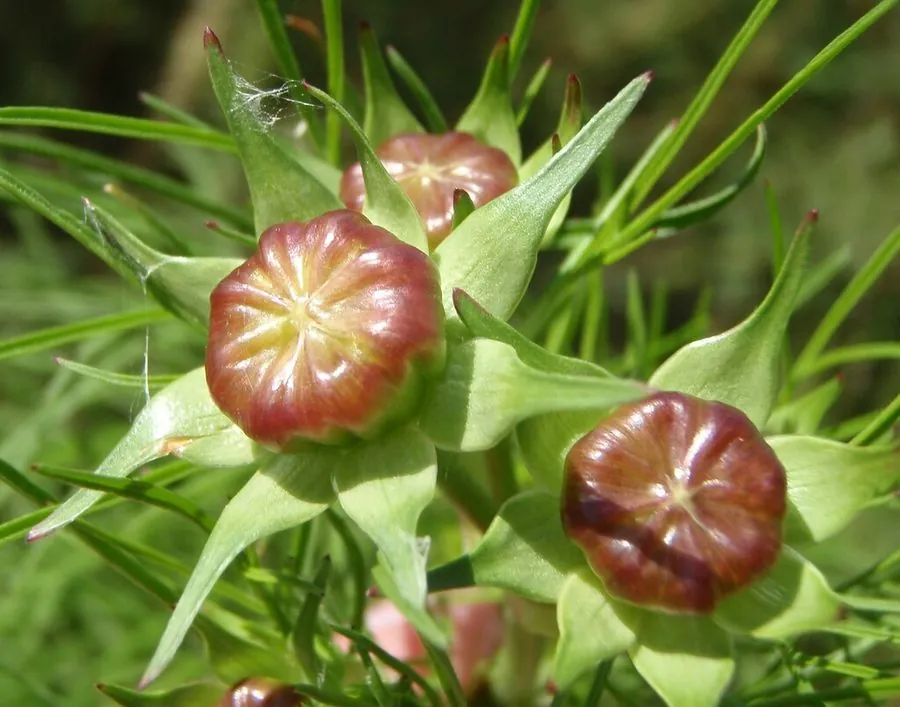

花卉与草本 · 植物界
大花金鸡菊 Coreopsis lanceolata

菊科金鸡菊属多年生草本，花色金黄、花梗细长，夏季成片开放如金色波浪，是常见的宿根花境植物与地被。
- 分类
- 门被子植物门纲木兰纲目菊目科菊科属金鸡菊属
- 栖息环境
- 原产北美草原，栽培于花境、边坡，喜光耐旱
- 地理分布
- 原产北美；中国各地引种栽培，长江流域常见逸生
- 保护级别
- 暂无评估；部分地区因扩散性强被视为需管控的外来植物
物种志
大花金鸡菊为菊科金鸡菊属多年生草本，高三十至八十厘米，茎直立，疏生短毛。叶片多基生，披针形至线状披针形，全缘或基部有裂片，茎生叶较小。头状花序单生于细长的花梗上，舌状花八枚、金黄色，先端具齿，管状花黄色，花期五至九月；瘦果扁平，具膜质翅，果期八至十月。
大花金鸡菊原产北美，中国各地引种栽培，在长江流域及以南地区常逸生为野生状态。它喜光、耐旱、耐寒，对土壤要求不严，在贫瘠的砂质土中也能生长，繁殖力强。花金黄醒目、花期长，是花境、道路边坡和野花组合中的常用材料；但种子量大、易自播，在部分地区的自然保护区内被视为入侵性植物，需控制扩散。
形态与习性
- 株高30–80 cm，茎直立
- 花期5–9 月，舌状花金黄
- 果期8–10 月，瘦果具翅
- 光照极喜光，光照足花繁
- 水分耐旱，忌积水
- 土壤疏松砂质土，耐瘠薄
- 主要用途花境、边坡绿化与野花组合
趣味知识
- 大花金鸡菊的舌状花先端有齿裂，像被剪刀剪过一样。
- 它自播能力极强，一次种植后常年年在原地萌发成片。
- 在部分自然保护区，大花金鸡菊因挤占本土植物空间而被列入管控名单。